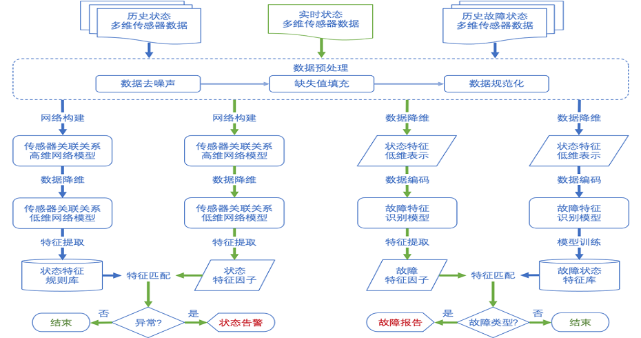
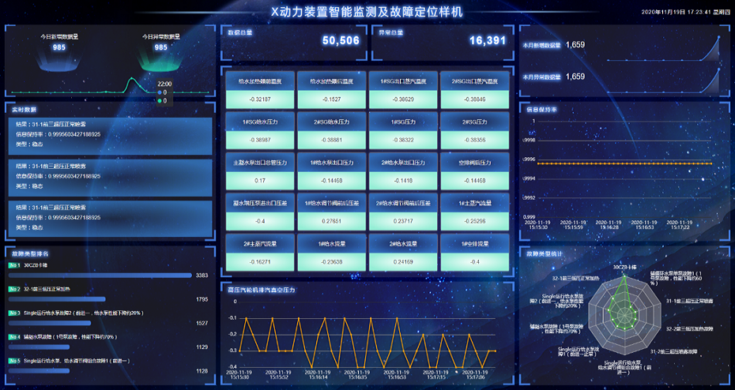
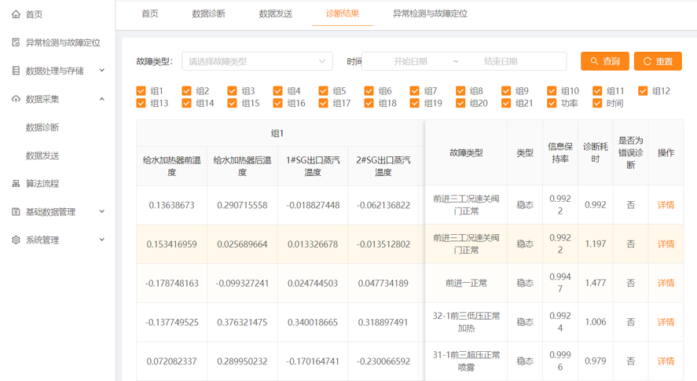
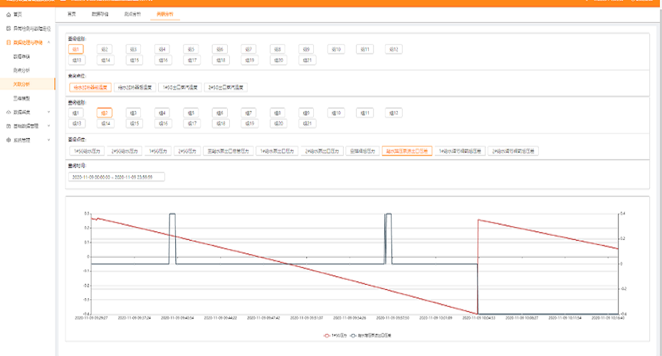

动力系统在线状态监测与故障诊断平台
项目介绍
问题：以故障为研究对象是新一代系统可靠性理论研究的重要特色,也是过程系统自动化技术从实验室走向工程的重要一环。最近二十多年来,以故障检测、故障定位、故障分离、故障辨识、故障模式识别、故障决策和容错处理为主要内容的故障诊断与处理技术,已成为机械设备维护、控制系统系统可靠性研究、复杂系统系统自动化、复杂过程的异变分析、工程监控和容错信号处理等领域重点关注和广泛研究的问题。
方案：动力系统在线状态监测与故障诊断平台是集各种先进传感技术、计算机技术、信息技术、结构分析以及结构状态评估理论于一体的系统工程，依托自动化监测与传输技术，其基本功能如下：
通过对动力设备监测数据的实时可视化，随时随地掌握动力设备的运行情况，以及动力设备的异常数据。
通过对动力设备监测数据的分析处理，结合动力设备的历史运行趋势的可视化分析，为动力设备的故障预警提供科学的、可靠的数据支持；集成多种监测技术以保障监测数据的完整性、可靠性及实用性，进而保证整个故障诊断分析系统的有效工作。
结合异常监测与故障诊断算法模型，详细划分出故障及异常的严重程度，从而可以制定适当的维修策略和检修方案。
项目架构


效果展示


项目视频